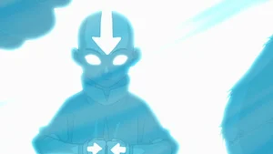

Episodes

- The Boy in the Iceberg – Katara and Sokka make a startling discovery while fishing: a boy frozen in an iceberg, perfectly preserved and -- amazingly -- alive.
- The Avatar Returns – An accident results in Aang's expulsion from the Southern Water Tribe, and the villagers soon find themselves beset by sinister Prince Zuko.
- The Southern Air Temple – Aang returns to his childhood temple, hoping to find evidence that his people still thrive in the region, but he makes a shocking discovery.
- The Warriors of Kyoshi – Aang, Sokka and Katara go to the island of Kyoshi, where they receive a chilly reception. After Aang proves he's the Avatar, he becomes a celebrity.
- The King of Omashu – Sokka and Katara must again indulge Aang when he drags them to the Earth Kingdom city of Omashu, another favorite haunting ground of his youth.
- Imprisoned – Aang and the others find an Earth Kingdom mining town under the thumb of the Fire Nation, and Katara feels guilty when her actions lead to an arrest.